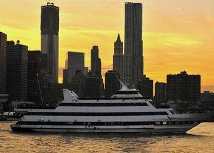

CRUCEROS
CRUCERO SPIRIT CRUISES - CENA BUFFET Y BAILEO
Tarifa
PRECIOS*
Domingos a Jueves: USD 130
Viernes: USD 133
Sábados: USD 144
Hora de embarque: 6:30pm
Hora de partida: 7:30pm
Duración: 2,5 Horas Domingos a Viernes - 3_Horas Sábado

Este crucero nos ofrece una espectacular vista de Manhattan envuelta en un ambiente divertido y
con un buffet variado que todos disfrutaremos. Aquí tendremos un DJ que pondrá energía en la
pista de baile.
-Los pasajeros se deberán presentar en el 61 Chelsea Piers, New York, NY 10011
- No incluye traslados ni bebidas alcoholicas.
- Se debe reconfirmar horario y disponibilidad.
- Se debe hacer reservación
- Precios no aplican para las fechas (Feb/12/2016 - Feb/14/2016, Mar/27/2016, May/08/2016, Jun/19/2016, Jul/04/2016, Nov/24/2016, Dic/24/2016, Dic/25/2016, Dic/31/2016, Feb/12/2017 - Feb/14/2017 )